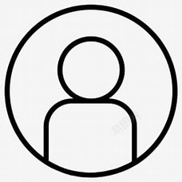

choose your image and cut it

Witness my best years with the time of a flower's reincarnation.
• NAME: Vaguesunrain
• EMAIL: example@gmail.com
• GENDER: Girl/Boy
Your Blog List:
You don't have any footprints yet.
Write something now!
THIS PAGE IS EMPTY,WE HAVE NOT DESIGN IT.